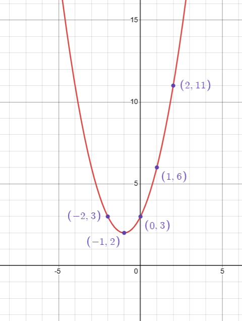

Funções Constantes
Funções Constantes são um caso especial de função, no qual, o x não aparece
Por exemplo: 'ƒ(x) = c'
| X | Y |
|---|---|
| -2 | 0 |
| -1 | 0 |
| 0 | 0 |
| 1 | 0 |
| 2 | 0 |
| X | Y |
Funções Polinomiais
Funções Polinomiais são as funções mais básicas, no qual, o x está elevado a algum expoente (polinómio)
Por exemplo: 'ƒ(x) = ax² + bx + c'
| X | Y |
|---|---|
| -2 | 3 |
| -1 | 2 |
| 0 | 3 |
| 1 | 6 |
| 2 | 15 |
| X | Y |

Funções não Polinomiais
Funções não Polinomiais são as funções que não tem um polinómio, mas, ainda têm x
Por exemplo: 'ƒ(x) = b * aˣ + c'
| X | Y |
|---|---|
| -2 | 0.25 |
| -1 | 0.5 |
| 0 | 1 |
| 1 | 2 |
| 2 | 4 |
| X | Y |
Funções Trigonométricas
Funções Trigonométricas são as funções em relação ao Triângulo Trigonométrico
Por exemplo: 'ƒ(x) = sen(x)'
| X | Y |
|---|---|
| -2 | -0.91 |
| -1 | -0.84 |
| 0 | 0 |
| 1 | 0.84 |
| 2 | 0.91 |
| X | Y |